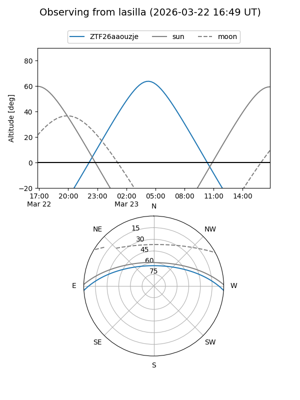
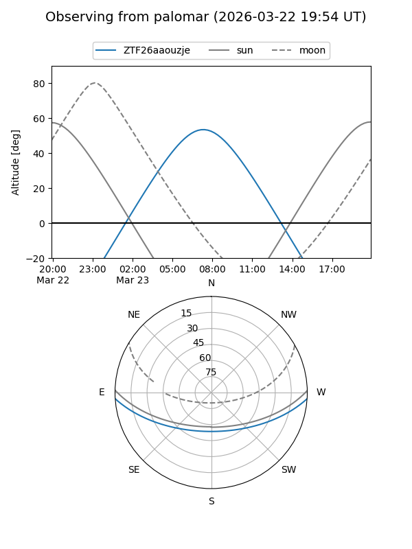

ZTF26aaouzje
Target ZTF26aaouzje at 2026-03-23 08:43
Aliases and brokers:
FINK: link
Lasair: link
ALeRCE: link
alt names
ZTF26aaouzje (ztf,fink_ztf)
Coordinates:
equatorial (ra, dec) = 173.3431,-2.97203
equatorial (HMS+DMS) = 11:33:22.34,-02:58:19.31
galactic (l, b) = (267.8687,+54.49692)
Flags:
Photometry:
last ztfg=17.41
1 ztfg detections
Lightcurve
Visibility


Additional plots